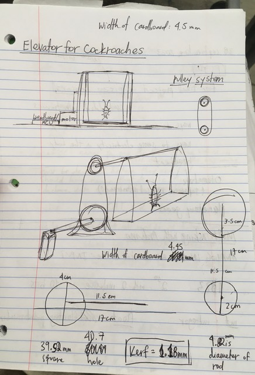

<br>
#### Week 3: Hand tools and Fabrication
This week I started making a kinetic sculpture! It was so hard but I was so proud when I finished it.
My idea was inspired by the two Madagascar Hissing Cockroaches that we have as pets in the Dudley Co-op. They were gifted to us by one of the Harvard biology labs. They're very cute and funny to have as pets. We keep them in a terrarium in our living room.
<img src="cucaracha1.JPG" alt="A Madagascar Hissing Cockroach" width="450" height="300">
My idea was to make a tiny little cockroach elevator that they can use to go up and enjoy the view from a while, and then come back down.
I thought of using a pulley system to make the elevator go up and down. Here is a photo of my first brainstorm and sketches for it.

Next week, I will build my cockroach elevator and create a circuit to power and control it.